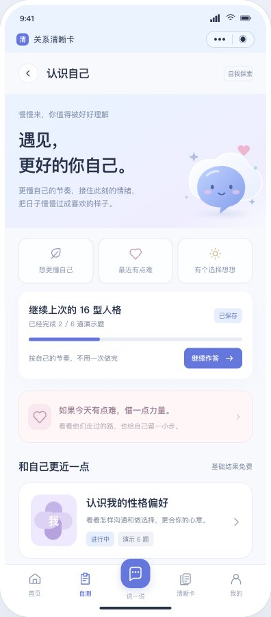

先把页面看清楚，
再把产品做出来。
所有原型集中在这里。沿着真实入口体验，也可以直接跳到想审核的页面。
本次新增 · 2026.10.26遇见，更好的你自己。
遇见，更好的你自己。
自我探索与温暖陪伴 · V1.2
更懂自己一点，给困难中的自己借一点力量。
28 个可点击页面，包含真实名人经历、经典题、自我探索与分享海报。

直接打开关键页面
按说明书组织，沿用 A 版风格已保留的原型与页面依据
原有页面也可以继续迭代感受这次的温度
先被理解，再慢慢往前
在项目里，本地启动查看
在 aichat 目录运行。浏览器打开 http://127.0.0.1:4188/，后续修改页面后刷新即可。
如果 4188 已经启动，直接使用现有页面。
npm run ui